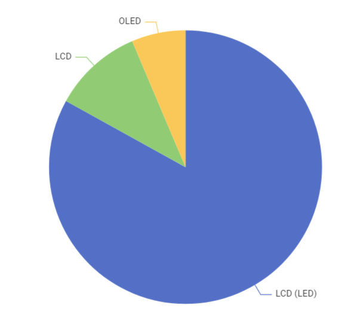
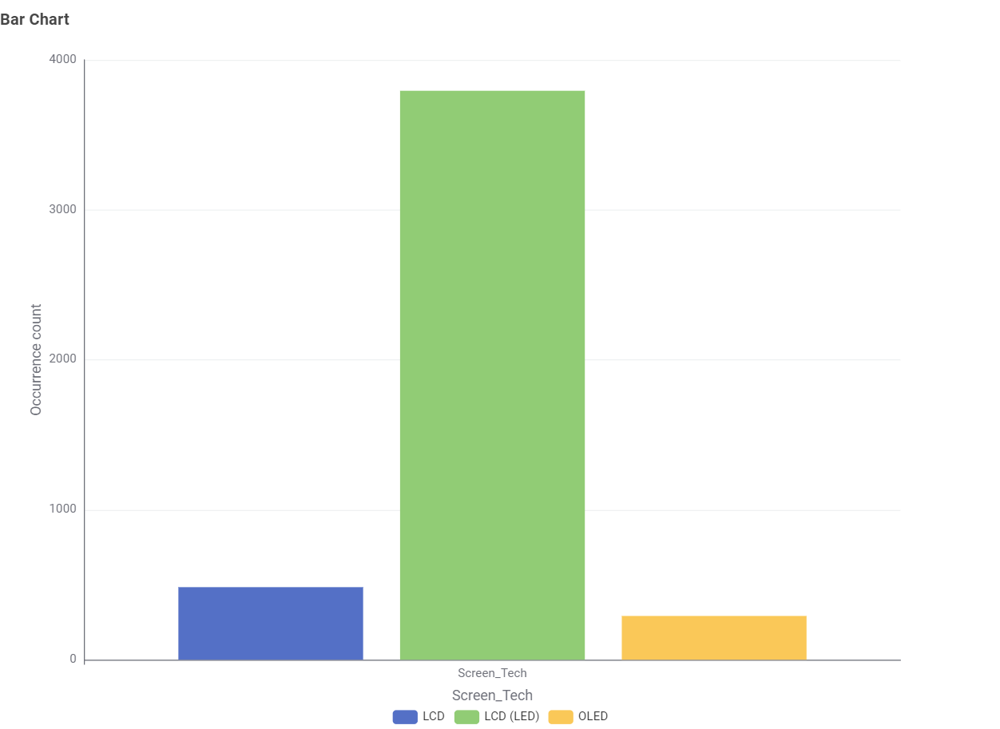
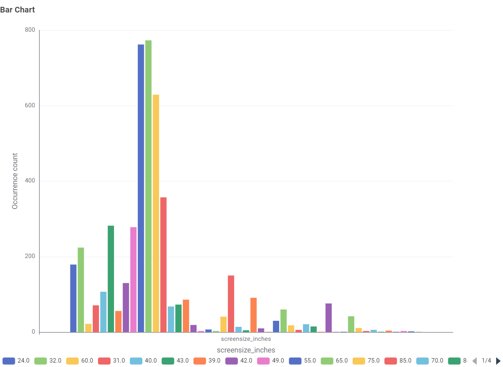
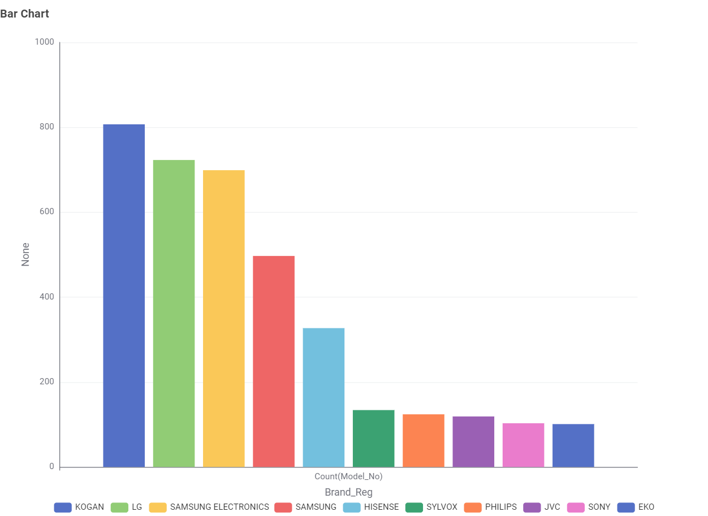
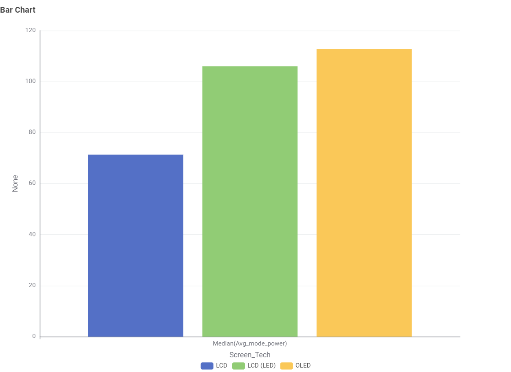
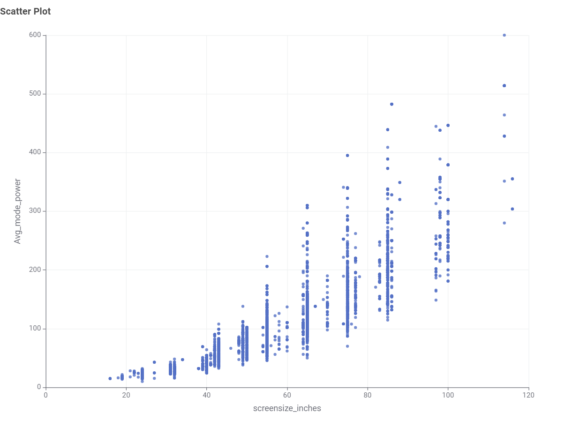
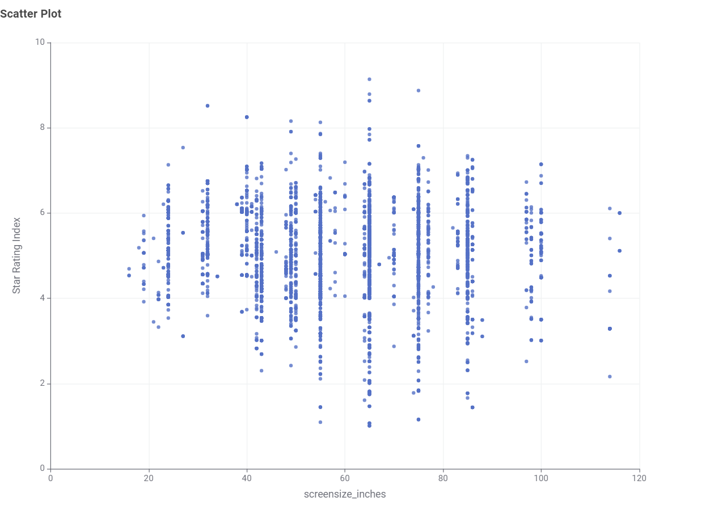
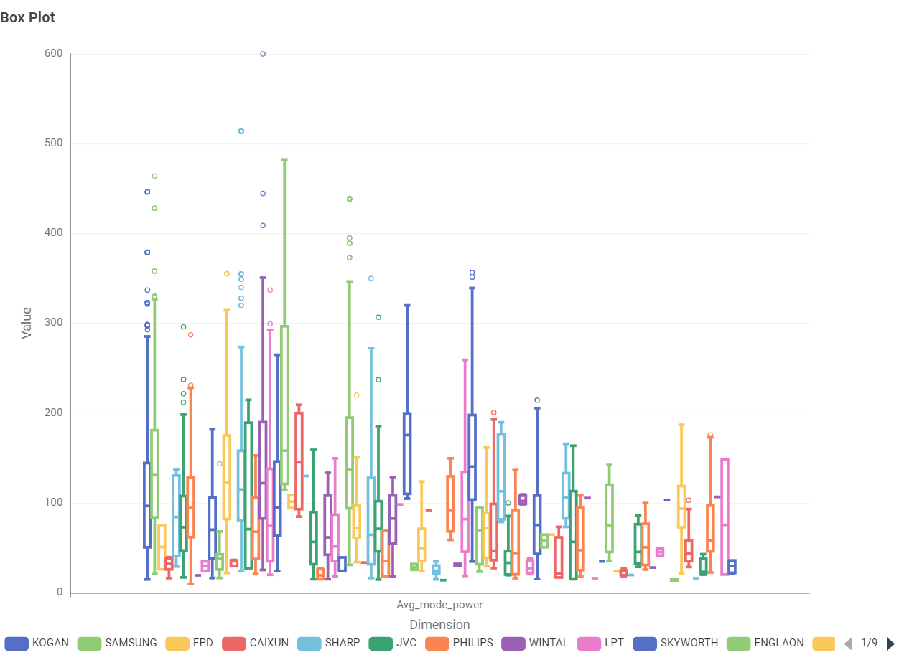
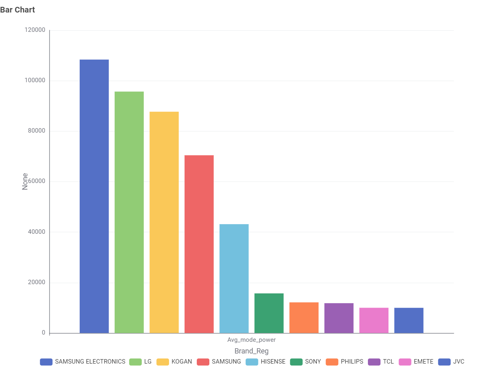

Data
Data Source
All data for this study was sourced directly from the official Australian Government open data portal at https://data.gov.au/.
All data for this study was sourced directly from the official Australian Government open data portal at https://data.gov.au/.
Displays energy efficiency indicators for various televisions sold in Australia, including energy efficiency star ratings, screen technology, and annual electricity consumption.
This portal serves as a testing platform for the COS30045 Data Visualization course, utilizing KNIME for data analysis and chart visualization.








Top 10 brands by median avg_mode_power:

COS30045 Data Visualisation — Unit Demonstration Project
This website is developed as part of COS30045 Data Visualisation at Swinburne University of Technology. It acts as an interactive demonstration platform to host web-based data visualisations exploring energy consumption data in Australia.